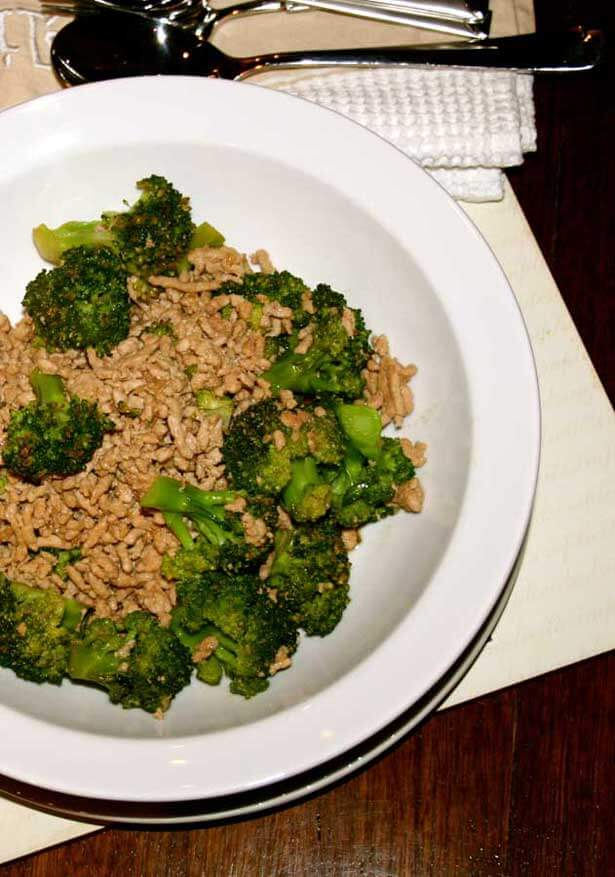

Contact Us
Resep
About Us
Home
Resep Tumis Brokoli Telur Asin

Bahan :
250 gr brokoli, potong per kuntum
1 sdt air jeruk nipis
½ sdt minyak wijen
Garam secukupnya
¼ sdt bubuk merica
100 gr tepung meizena
¼ sdt bubuk cabai
Minyak untuk menggoreng
1 sdm margarin
2 siung bawang putih, cincang halus
½ buah bawang bombay, iris
2 buah cabai merah besar, buang bijinya, cincang halus
1 sdm saus tiram
½ sdt gula pasir
2 butir telur asin matang, haluskan
Cara Membuat :
Langkah 1 : Lumuri brokoli dengan air jeruk nipis, minyak wijen, garam dan merica bubuk
Langkah 2 : Campurkan tepung maizena, garam dan bubuk cabai. Gulingkan brokoli satu persatu hingga berbalut rata. Goreng dengan minyak panas hingga kecokelatan, angkat. Sisihkan.
Langkah 3 : Panaskan margarin, tumis bawang putih dan cabai merah, saus tiram, gula pasir, telur asin dan brokoli goreng, aduk rata. Masak sebentar, angkat.
Sangat mudah bukan membuatnya, yang pasti kandungan seporsi Tumis Brokoli Telur Asin sangat baik untuk anda. Selamat memasak :)